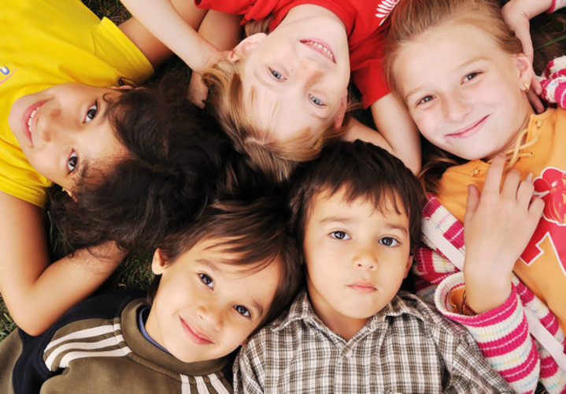

La importancia de proteger los derechos de la niñez
La niñez tiene derecho a crecer en un ambiente seguro, con acceso a educación, salud, alimentación y protección. Estos derechos permiten que niñas, niños y adolescentes desarrollen sus capacidades y construyan un mejor futuro.
Casa Alianza Honduras trabaja diariamente para proteger a menores que han sido víctimas de violencia, abandono o exclusión social, brindándoles atención, acompañamiento y oportunidades para mejorar su calidad de vida.
Además de la atención directa, la organización promueve campañas de prevención, educación y sensibilización para fortalecer el respeto a los derechos de la niñez en todo el país.
← Volver al blog